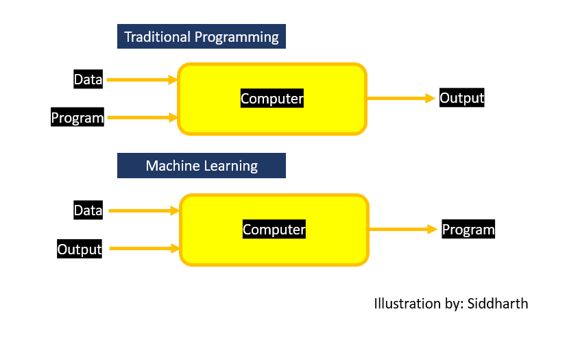

Let's start with formal definition of Machine Learning.
Machine learning is field of computer science that gives computers capability to learn without being
explicitly programmed.
Now, what does it mean? Let us try to understand this in layman terms.
While writing any computer program, we usually write each and every condition. But there are certain tasks
which cannot be programmed by explicitly defining each and every condition. There are so many conditions involved that we cannot write
each and every condition. Machine learning gives computer, the ability to learn.

We use data and specific algorithms to teach machines how to perform certain tasks. Machines try to find
certain patterns in data which can be further utilized to predict on data which is new for machine. Machine Learning
uses concepts from mathematics like probability, statistics etc. to extract patterns from data.
Let's consider we are running social media company. Now, elections are about to take place in specific country
where we are providing service and government of that country want us to limit fake news on our platform as
there is possibility of fake news being circulated to affect election results.
Now, In traditional programming, we define rules like this:
1. If news is from user "@fakeNewsGuy"
2. News has word "fakeNews", block content.
Now, Consider you are having few million users from that country, it is almost impossible to manually
check if specific user is spreading fake news or not. Also, blocking all content from specific
user is not a solution to this problem.
Now consider we start using new rule based algorithm:
1. If content has specific words
2. Content having this much dislikes, block content.
Issue here is, same word can have different sentiment based on context and normal algorithms cannot identify
those.
Now, you can understand from this example is, some problems need engineers to look at lot of data manually
and it is almost impossible to analyze data and finding patterns in data. It also make code very messy and difficult
to maintain. Now, with ML, we can feed data to machine where news examples are given to machine with labels of
"Fake" or "Not fake" and machine finds patterns without explicitly defining rules. As we keep getting new data
of fake news, we just feed new data to machine and machine will adjust parameters accordingly.